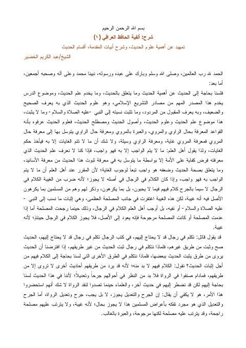

Downloads need an internet connection.
شرح ألفية العراقي- الخضير
Authors: عبد الكريم عبد الله الخضير
Publishers: موقع الشيخ عبد الكريم عبد الله الخضير
**▫️ العنوان: شرح ألفية العراقي- الخضير** ▪️ المؤلف: #عبد_الكريم_عبد_الله_الخضير ▫️ الناشر: #موقع_الشيخ_عبد_الكريم_عبد_الله_الخضير ▪️ الطبعة: 1 ▫️ عدد الأجزاء: 58 ▪️ الصفحات: 576 ▫️ نوع الوعاء: #كتاب ▪️ التصنيف الرئيسي: #الحديث_وعلومه ▫️ التصنيف الفرعي: #مصطلح_الحديث ۪